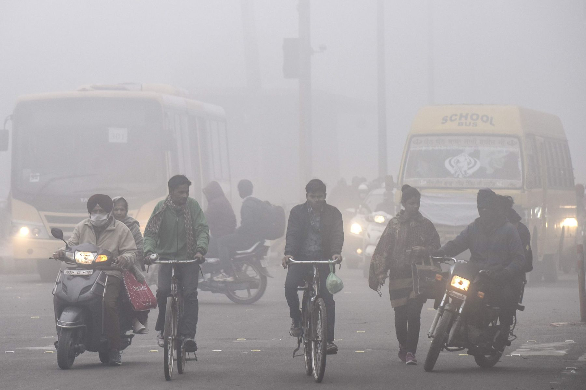

✨ Berihkan nafasmu, jaga dirimu dari polusi ✨

✨ Berihkan nafasmu, jaga dirimu dari polusi ✨


10 juta anak terancam dampak polusi udara akibat kebakaran hutan dan lahan.
Baca Selengkapnya

Efek Jangka Panjang Tubuh Kurang Istirahat, Pengaruhi Daya tahan tubuh.
Baca Selengkapnya

Peringatan Kualitas udara dalam ruangan, Sangat berpengaruh dengan kesehatan tubuh
Baca Selengkapnya

Polusi Udara Jakarta Memburuk? Kalbar Paling Buruk
Baca Selengkapnya